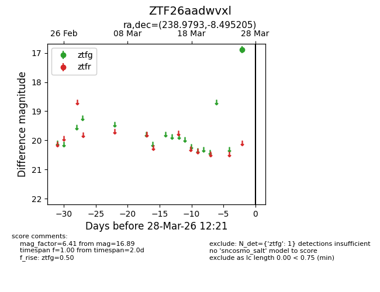
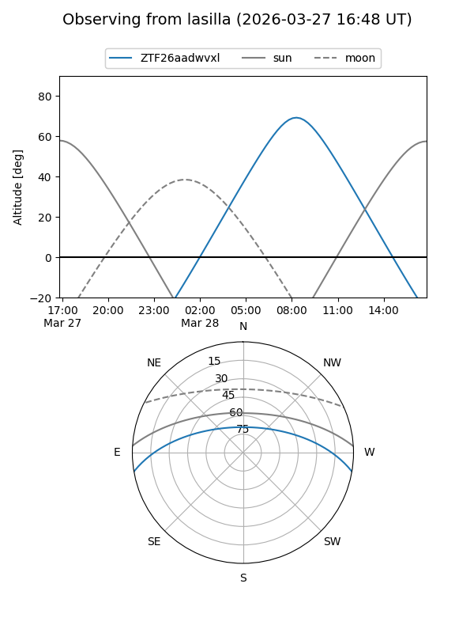
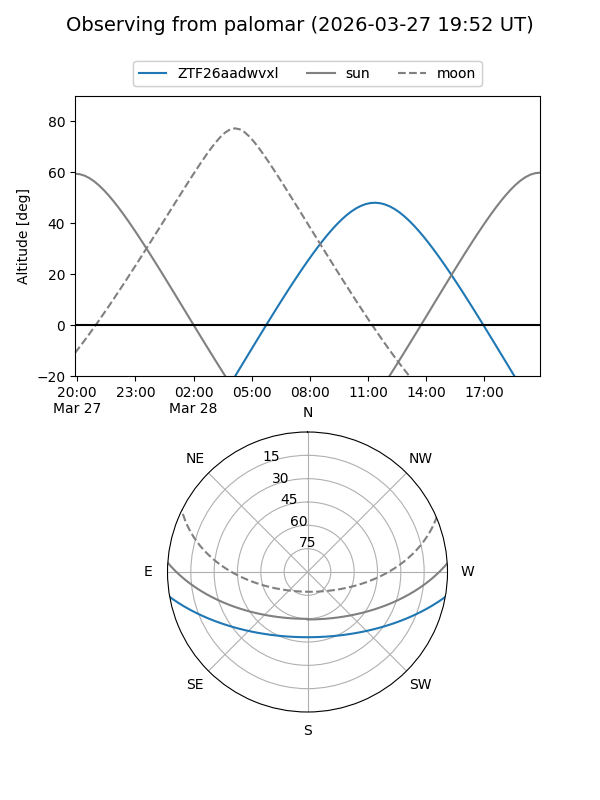

ZTF26aadwvxl
Target ZTF26aadwvxl at 2026-03-28 12:24
Aliases and brokers:
FINK: link
Lasair: link
ALeRCE: link
alt names
ZTF26aadwvxl (ztf,fink_ztf)
Coordinates:
equatorial (ra, dec) = 238.9793,-8.49520
equatorial (HMS+DMS) = 15:55:55.03,-08:29:42.74
galactic (l, b) = (1.0121,+32.87226)
Flags:
Photometry:
last ztfg=16.89
1 ztfg detections
Lightcurve

Visibility


Additional plots